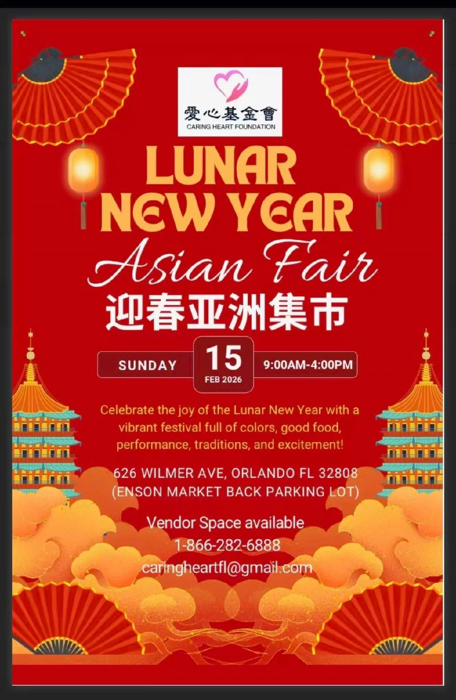

📅
Date
Sunday, February 15, 2026
A community marketplace and cultural gathering concept celebrating Asian food, arts, traditions and local connections.
The previous website featured the 2026 Lunar New Year Asian Fair with community activities, food, performances, traditions and vendor opportunities.
Sunday, February 15, 2026
9:00 AM – 4:00 PM
636 Wilmer Ave., Orlando, FL 32808
866-282-6888 · CaringHeartFL@gmail.com


The event date above is historical; this section preserves the event information and artwork from the previous website.
The Asian Fair can create opportunities for families, seniors, local businesses and community groups to connect.
Possible activities include food booths, crafts, cultural demonstrations, music and community information tables.
The goal is to celebrate cultural diversity while creating a friendly and inclusive space for everyone.
Programs are being developed with community needs, qualified partners and appropriate safeguards in mind.
Get Involved